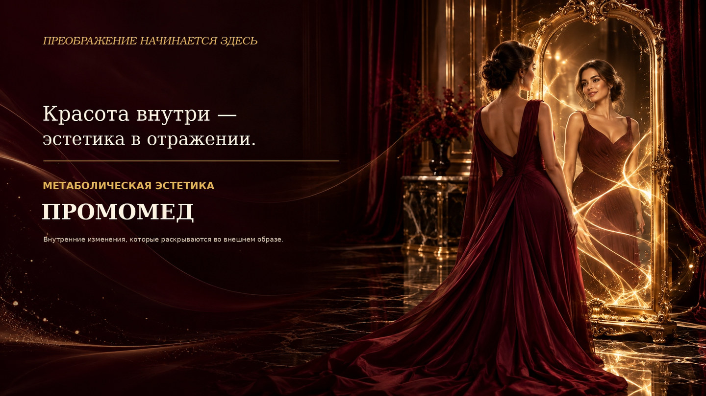

До

Индивидуальная консультация для Натальи Николаевны
От первого входа до готовой презентации. На примере вашей лекции покажу, как обновить оформление слайдов в ChatGPT. Вы также попробуете собрать материалы в проект, подключить навыки и создать иллюстрацию по своему референсу.
Откройте ChatGPT и нажмите «Зарегистрироваться». Выберите «Продолжить с Google» и свой Google-аккаунт или «Продолжить с Apple» и тот Аккаунт Apple, которым пользуетесь для iCloud. Запомните свой выбор для входа на компьютере.
Своей картой. Войдите в аккаунт, откройте меню профиля и выберите «Обновить план» → Plus. Оплатите иностранной картой, которую принимает сервис. При прямой оплате подписка продлевается ежемесячно.
Через посредника. Юлия для оплаты пользуется ANNEXX Pay в Telegram. Откройте бота и пройдите по кнопкам в указанном порядке.
«Нужно оплатить» → «ChatGPT» → «Plus 1 мес»
Сверьте итоговую сумму в боте, затем следуйте его инструкциям. После оплаты убедитесь, что в вашем профиле ChatGPT указан план Plus.
На официальной странице загрузки выберите приложение для своей операционной системы. Установите и откройте его. Войдите через тот же Google-аккаунт или Аккаунт Apple, к которому подключили Plus. Создайте новый чат для лекции.
Скачайте и распакуйте папку. Через «+» у поля сообщения прикрепите файл «Бриф и навыки.txt», три JPG из «Образцов оформления» и свою лекцию в PPTX. Для тренировки подойдёт PDF исходной лекции из папки «Пример».
В брифе уже собраны правила вёрстки, работы с графиками и иллюстрациями. Отправьте первое сообщение ниже, чтобы проверить, что чат видит материалы.
Я готовлю лекцию для врачей. Прочитай бриф, инструкции и референсы из прикреплённых файлов. Перечисли полученные материалы и коротко опиши правила оформления. Если файла не видно, назови его.
Мы согласовывали оформление на одном слайде. Так можно проверить текст и увидеть, подходит ли дизайн для аудитории, прежде чем перевёрстывать всю лекцию.
Возьми один содержательный слайд из моей презентации. Распознай заголовок, текст, цифры, единицы и сноски. Сохрани связь показателей с препаратами и исследованиями. Отметь всё, что нужно сверить. Сначала покажи расшифровку.
Собери один пробный слайд 16:9 по сверенной расшифровке и референсам. Сохрани медицинские формулировки. Используй светлую палитру, общие поля и один главный акцент. Текст и числа сделай редактируемыми. Покажи слайд целиком.
Примени утверждённый макет ко всей лекции. Проверь иерархию, общие оси, интервалы и переносы. Свяжи предлоги со следующим словом и проверь концы строк. Графики строй по таблицам, сохраняя значения, единицы, шкалы, серии и интервалы погрешности. Если есть только рисунок, перенеси опубликованные кривые и укажи источник. Упаковки вырежи по контуру. Сохрани редактируемый PPTX и перечисли места, требующие моей проверки.
Создаём аккаунт, подключаем Plus и входим в приложение на компьютере.
Берём слайд из вашей презентации, извлекаем текст и собираем редактируемую версию в PowerPoint.
Собираем файлы одной лекции в проект. Разбираем, что оставить в инструкциях проекта и какие материалы приложить к конкретному чату.
Используем авторский навык Юлии create-ai-visuals. Загружаем свои референсы, задаём роль каждого — свет, композицию или фактуру — и уточняем результат.
Договоримся о личной встрече. Разберём все вопросы, которые возникнут при самостоятельной работе с ChatGPT.
Я Юлия Ларичева, коммуникационный дизайнер и AI-креатор. С 2023 года работаю с генеративным ИИ. В Arrr.agency разрабатываю визуальные концепции для брендов и воплощаю их в спецпроектах, соцсетях и презентациях. Ещё помогаю команде использовать ИИ в повседневной работе.
Наталья Николаевна, буду рада увидеть ваши первые слайды. Если захочется что-то обсудить, напишите мне в Telegram — разберёмся вместе.